实验结果
| 方案 | Precision | Recall | F1 | 误报率 | 入选事件 |
|---|---|---|---|---|---|
| rule_only | 1.000 | 0.500 | 0.667 | 0.000 | 8 |
| behavior_only | 0.500 | 1.000 | 0.667 | 0.188 | 32 |
| fusion_balanced | 1.000 | 1.000 | 1.000 | 0.000 | 16 |
| fusion_sensitive | 0.889 | 1.000 | 0.941 | 0.024 | 18 |
| fusion_precise | 1.000 | 0.500 | 0.667 | 0.000 | 8 |
| decision_tree | 1.000 | 1.000 | 1.000 | 0.000 | 16 |
| fusion_with_tree | 1.000 | 1.000 | 1.000 | 0.000 | 16 |
图 1：日志来源与标签分布
用于观察不同日志来源的总体规模，以及恶意事件主要集中在哪些来源类型中。
当前实验结论：来源分布存在明显聚集，高风险来源适合优先进入复核视角。
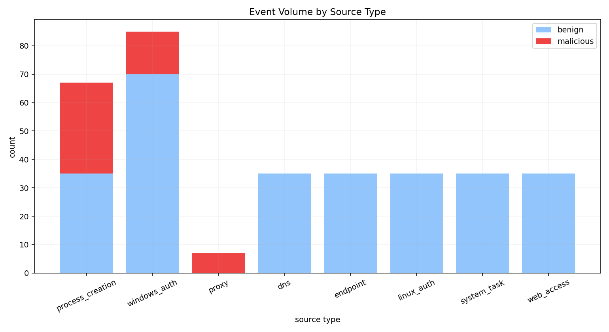
图 2：风险分数分布
用于观察良性事件和恶意事件在风险分数上的分离程度，虚线右侧为更值得优先复核的区域。
当前实验结论：风险分数呈现良性与恶意分层，阈值右侧区域具备更高处置优先级。
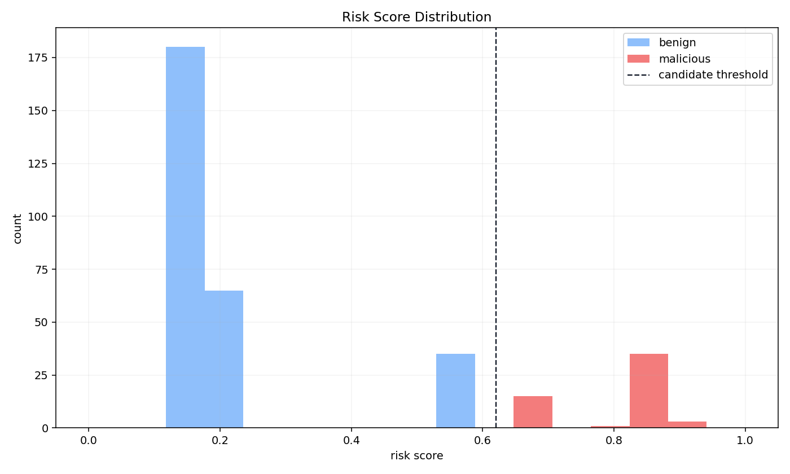
图 3：规则命中次数
用于观察哪些规则命中最频繁，条形越长，说明该类攻击痕迹在数据中越突出。
当前实验结论：高频规则命中区域可直接对应重点攻击痕迹。
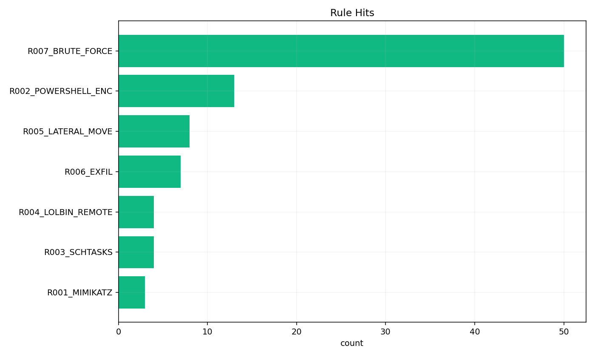
图 4：主机与来源风险热力图
用于观察哪些主机在特定日志来源上呈现较高平均风险，颜色越暖代表关注优先级越高。
当前实验结论：高热区域主机更适合作为排查起点。
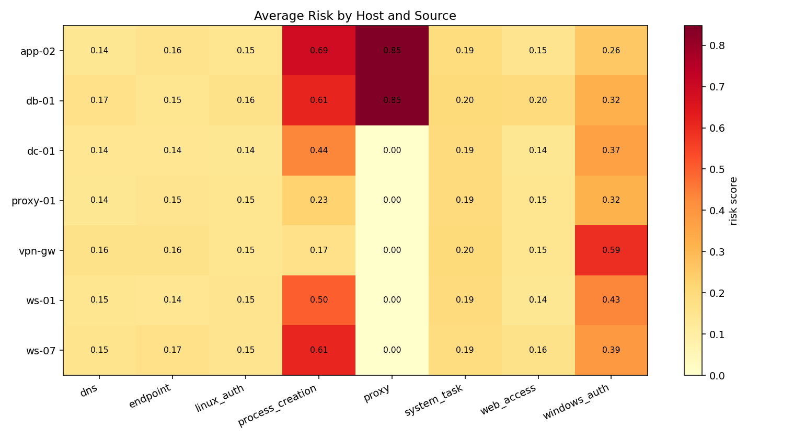
图 5：时间线
用于观察风险事件在时间维度上的聚集情况，峰值越明显，越容易定位集中发生的攻击窗口。
当前实验结论：时间峰值对应的窗口适合优先回看原始日志。
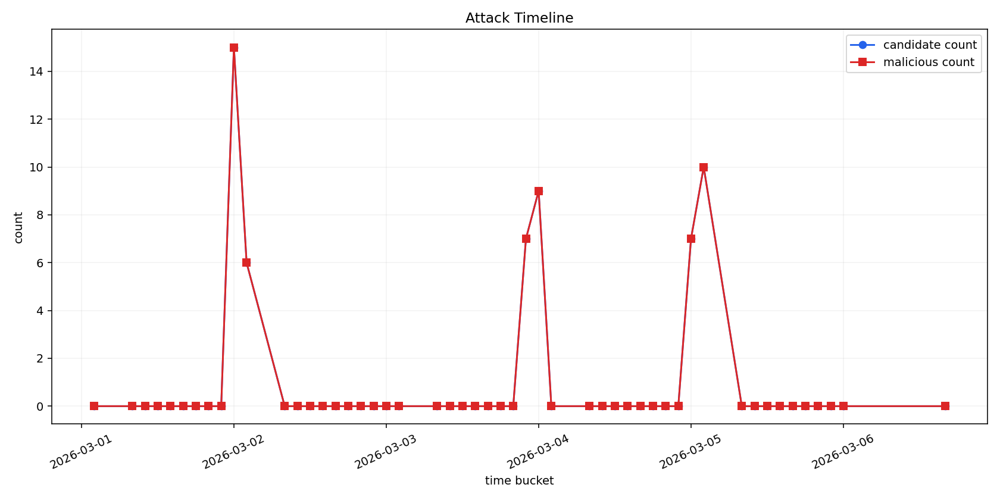
图 6：攻击阶段覆盖情况
用于比较各攻击阶段的真实恶意事件量与检测命中量，两组柱形越接近，说明覆盖越完整。
当前实验结论：阶段覆盖图可直接用于检查检测链路是否存在缺口。
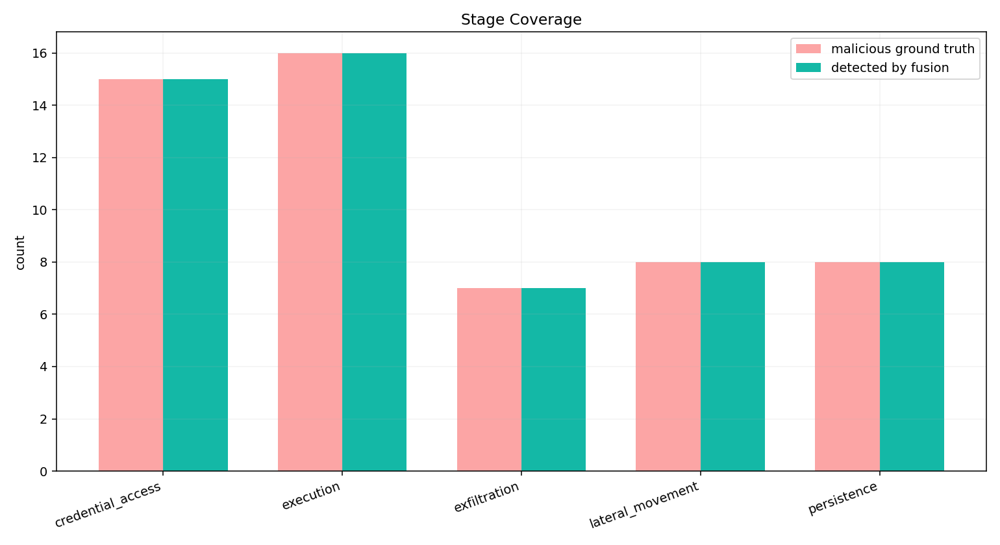
图 7：融合方案混淆矩阵
用于观察分类结果的四种情况，左上和右下数值越高，说明整体判定越稳定。
当前实验结论：当前主方案的误报率为 0.000，分类结果整体稳定。
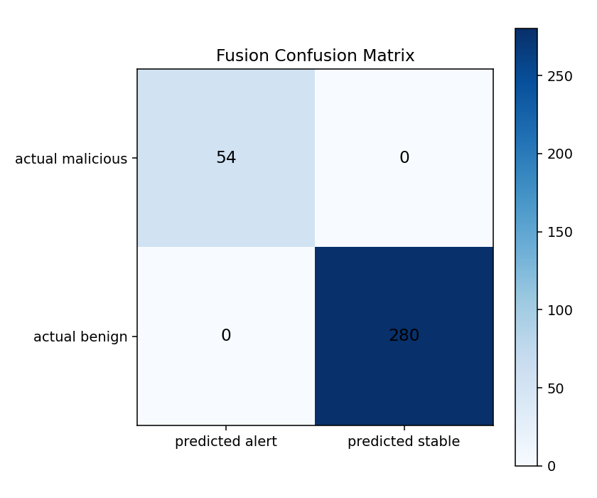
图 8：实验方案对比
用于横向比较不同方案的 Precision、Recall 和 F1，便于快速选择更均衡的配置。
当前实验结论：当前最优方案为 `fusion_balanced`，F1=1.000；次优方案为 `decision_tree`，F1=1.000。
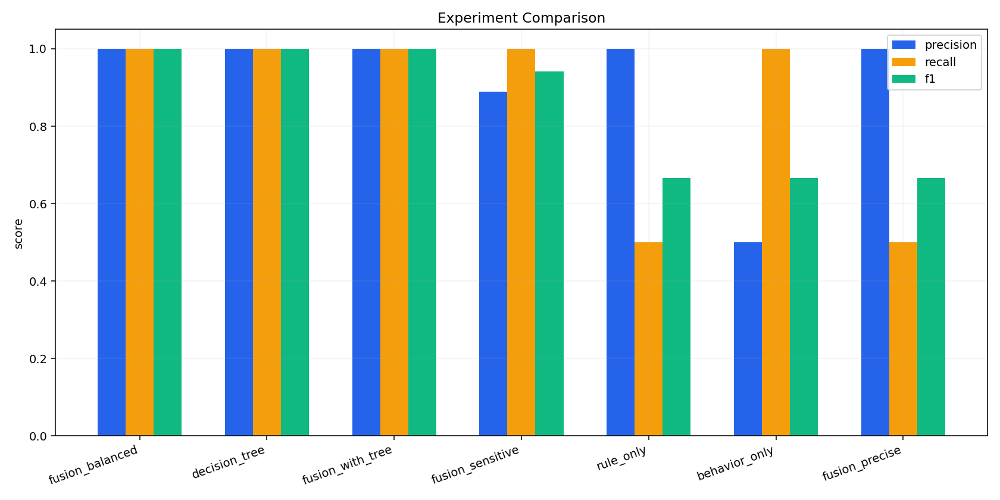
图 9：筛选漏斗
用于展示日志从总量到规则命中、行为增强、高风险候选、真实命中的逐步收缩过程。
当前实验结论：漏斗收缩过程清晰，便于理解从海量日志到真实命中的筛选路径。
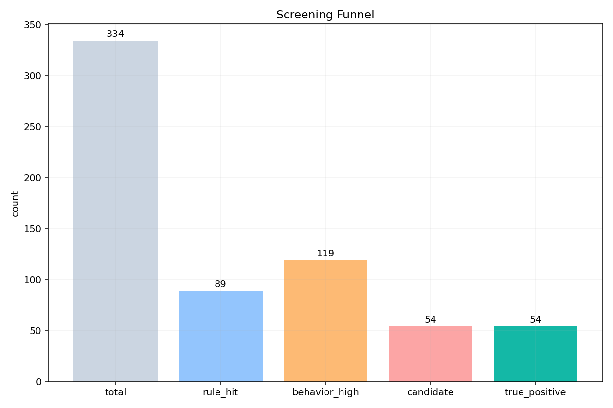
图 10：决策树特征重要性
用于观察决策树更依赖哪些输入特征，数值越大，说明该特征对模型判断的贡献越明显。
当前实验结论：决策树特征重要性能够直接解释模型依赖的核心判断依据。
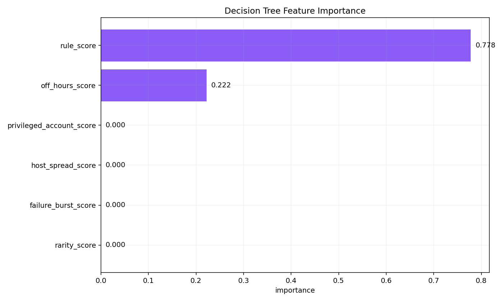
图 11：决策树结构
用于直接查看模型的判定路径，越靠近根节点的分裂条件，对结果的影响越显著。
当前实验结论：当前树深度为 2，模型保持浅层结构。
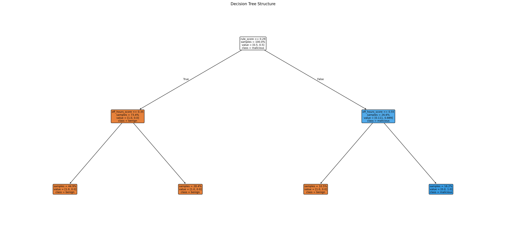
图 12：决策树分数分布
用于观察决策树输出概率对良性与恶意事件的区分程度，重叠越少，区分效果越直观。
当前实验结论：树分数分布呈现分层时，模型的概率输出更容易解释。
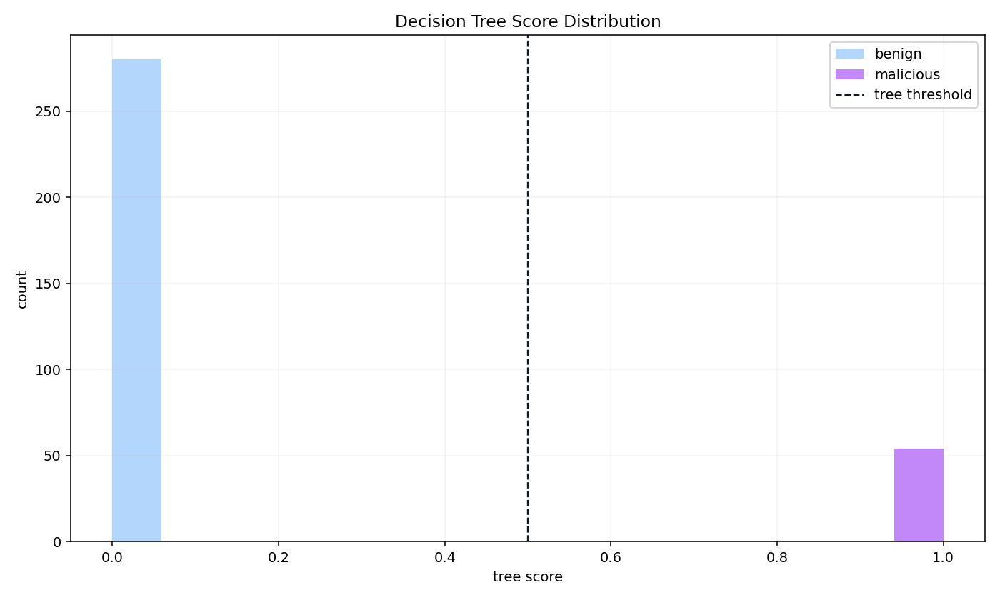